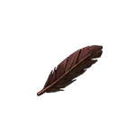
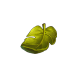
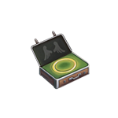
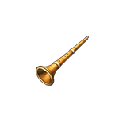

Получено: файл; исходный URL. Иллюстрация «Райская коллекция» из каталога ViveR_9, сопоставлена по точному названию; возможны отличия версий. Оригинальный файл без перекодирования; авторство отдельно не установлено. Страница: источник.
Райская коллекция
Браузерная социальная версия; историческая статья; дата редакции неизвестна- Тип
- Коллекции
- Версия и дата
- Браузерная социальная версия; историческая статья; дата редакции неизвестна
Элементы коллекции




Данные по источнику · Браузерная социальная версия · историческая статья; дата редакции неизвестна
Предварительно: один материал, требуется сверка. Требуется сверка.
- Состав (источник Zombie-island)
- Черное перо; Фиговый лист; Лира; Нимб; Труба ангела.
- Награда (источник Zombie-island)
- 1 Подушка; 50000 Монеты.
- Где копать Райскую коллекцию в Зомби Ферме лопатами
- Элитный букет; Слоник декор; Истукан; Истукан 2; Истукан 3; Облако; Зимняя вишня.
- Райская коллекция попадается при колдовании Палочками
- Палочка-выручалочка; Черный мрамор; Белый мрамор; Зеленый мрамор.
- Райская коллекция попадается в ведрах Рыбаков и мешках Звездочетов
- Рыбак; Рыбак с мозгами; Звездочет; Звездочет за зомбаксы.
- Райскую коллекцию можно найти в ценностях и сокровищах
- Валентинка; Полосатое; Коллекционер 2; Северный аметист; Северный аквамарин; Сундук Чудовища 3; Подарок Зомби; Дружеский подарок; Биг-бен.
- Райскую коллекцию можно привезти с пиратских островов
- Пиратский сундук.


Данные по источнику · ВКонтакте, ZombieS Forever · дата редакции не установлена
Предварительно: Историческая фанатская страница; независимость от других источников не установлена. Возможны различия версий и дат.. Требуется сверка.
Данные по источнику · браузерная версия; платформа не указана · дата редакции не установлена
Предварительно: Содержимое списка: изображения и колонки могут терять смысл при извлечении текста; отдельная страница и дата не проверены. Подписи alt иногда ошибочны.. Требуется сверка.
- Текст карточки из каталога
- 50 000 монет и Подушка Чёрное перо Фиговый лист Лира Нимб Труба Ангела Где копать (Палочками-выручалочками): В подземельях, кликая Палочкой-выручалочкой на подземные ресурсы. Например, в Щупальцах (Нижнее днище) на 20 и 25 единиц, в Мраморной пещере. Облако, Слоник, Голубая ракета, Флаг Марафонца Марафонец, Летающая тарелка Истукан 3 (с необитаемого),
Данные по источнику · браузерная версия; на сайте указана игра ВКонтакте · дата редакции не установлена
Предварительно: Исторический текст; сильно совпадает со справкой Zommbie.at.ua, независимость не доказана. Отрицания и доступность могут измениться с патчем.. Требуется сверка.
- Где искать по странице «Зомбастики»
- Щупальца (20 единиц) в Нижнем днище.
Данные по источнику · историческая браузерная версия, платформа не указана · 10.01.2014 — дата в каталоге; дата редакции материала неизвестна
Предварительно: Фанатский список без вероятностей и уточнения площадки; независимость от других источников не установлена.. Требуется сверка.
- Где искать по списку сайта
- Щупальца (20 единиц) в Нижнем днище
- Оговорка
- Список может относиться к разным условиям, инструментам и периодам игры; не доказывает гарантированное выпадение. Заявления «только» и «невозможно» относятся лишь к времени и версии источника.
Данные по источнику · браузерная игра; социальная сеть не указана · 07.04.2015 — дата статьи, дата последующих правок неизвестна
Предварительно: Фанатские статьи могут быть зависимыми. Сопоставлены только указанные факты; выпадение не обязательно гарантировано, цены и доступность могли меняться.. Требуется сверка.
- Лира и награда
- Автор называет лиру элементом Райской коллекции и указывает 50 000 монет и одну подушку за обмен — совпадает с Zombie-island.
- Источники лиры
- Среди названных способов — раскопки под облаками, истуканами, зимней вишней и слоником; мешки звёздочётов, рыбаки, Полосатое яйцо и другие ценности. Вероятности не указаны.
Связанные сущности
нет проверенных связей — требуется сверка.
Источники
- прочитано: Zombie-island.moy.su; проверка 2026-11-21
- Прочитана статья или строка таблицы; требуется сверка
- ZOMBIA: прочитана карточка в списке
- Ссылка на отдельную страницу; отдельно не проверена
- Зомбастики: прочитана соответствующая строка; возможная копия другого справочника
- ViveR_9: изображение в каталоге коллекций; совпадение названия
- zommbie.at.ua: где искать коллекции
- FatalGame: отдельно прочитанная статья; выборочная сверка